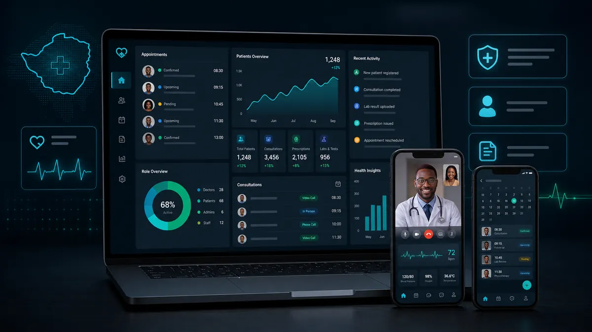

Final-year dissertation and Cimas Healthathon 3.0 entry
Kiosk+ patient robot kiosk
A digital receptionist kiosk for Zimbabwe's public hospitals, designed around Mutare Provincial Hospital. It handles symptom triage, appointment booking, queue management and doctor dashboards, with voice interaction in 16 Zimbabwean languages.
Next.js 14React 18PrismaSQLiteWeb Speech API